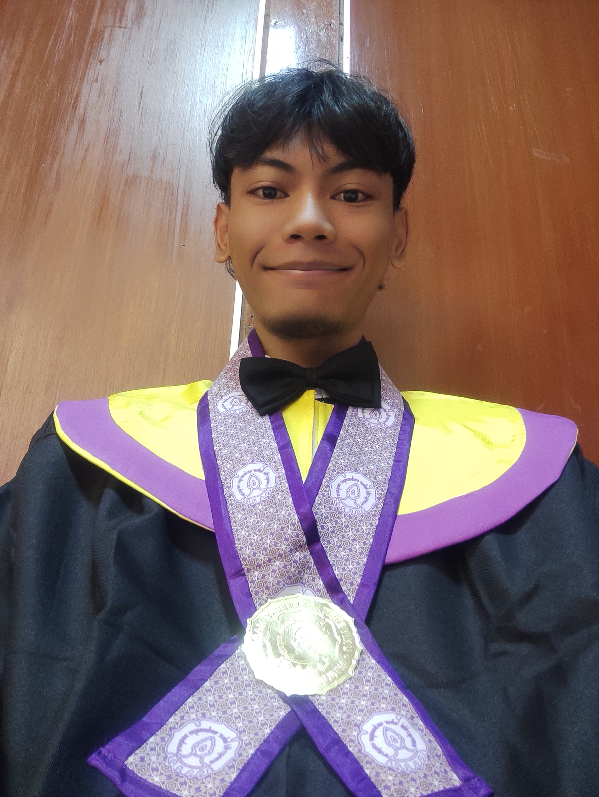

APR 2022 — AUG 2023
SEO Staff
PT Ratakan Media Kreasi
Worked on search engine optimization activities, keyword research, content-related tasks, and digital performance reporting.
A technology enthusiast with a creative mindset. Interested in exploring ideas, building digital experiences, and continuously learning through different fields.

Ahmad Nur Kholily / Personal Profile
Hello! I'm Ahmad Nur Kholily, a graduate of Informatics and Computer Engineering Education from Universitas Sebelas Maret, Indonesia.
My interests span across technology, multimedia, digital content, and creative problem-solving. I enjoy exploring how technology can be used to create useful solutions and meaningful experiences.
Throughout my academic and organizational journey, I have gained experience in application development, digital content, communication, teaching, and collaborative work. These experiences have shaped my ability to adapt, learn, and approach challenges from different perspectives.
I believe that learning does not stop at a degree or a particular profession. Every project and collaboration is an opportunity to grow.
PT Ratakan Media Kreasi
Worked on search engine optimization activities, keyword research, content-related tasks, and digital performance reporting.
SMK Negeri 1 Banyudono
Participated in teaching practice and classroom activities in the Computer and Network Engineering program.
Marching Band Universitas Sebelas Maret
Contributed to member development, recruitment, selection, and placement activities, helping members explore their potential within the organization.
Marching Band Universitas Sebelas Maret
Took part in creative communication and organizational public relations activities, supporting information delivery and creative content.
Bachelor's Degree in Informatics and Computer Engineering Education
Surakarta, Indonesia
Software development, digital systems, web technologies, and practical solutions.
Visual communication, graphic design, layout, and creative experimentation.
Photography, visual storytelling, image editing, and digital media.
Teamwork, organizational activities, communication, and shared learning.
Learning, teaching, knowledge sharing, and making complex ideas easier to understand.
Performance, discipline, teamwork, and musical expression.
I'm always open to new opportunities, collaborations, and interesting challenges.
Get in Touch